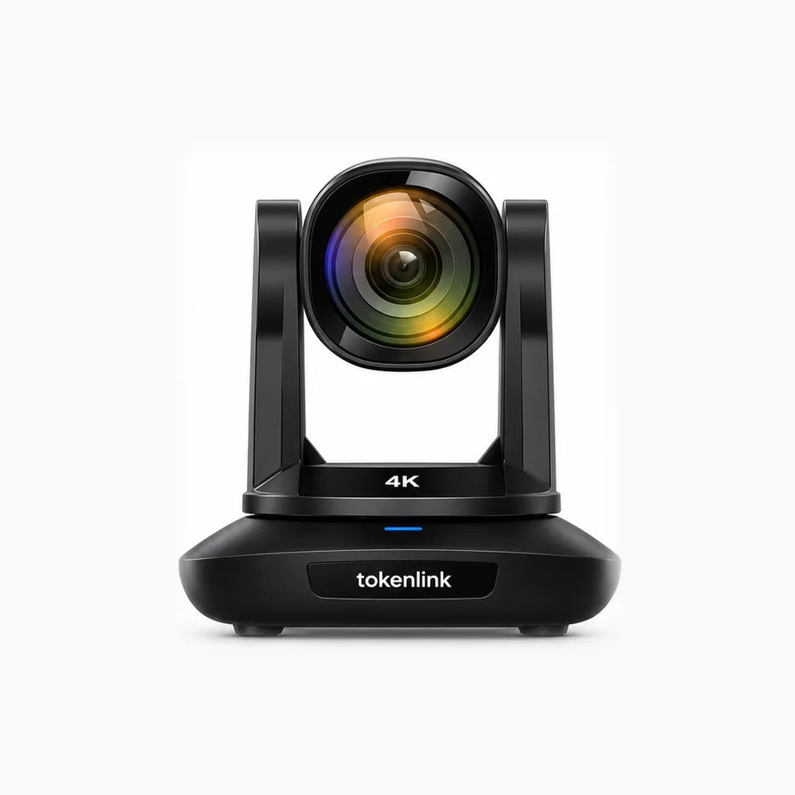

Vista frontal
TOKEN LINK PTZ 30X 4K
Zoom óptico de 30X, 4K60 por HDMI, sensor Sony de 12 MP, SRT e saída simultânea por NDI|HX, 3G-SDI, HDMI e USB 3.0 Tipo-C.
- Sensor Sony 12 MP
- SRT
- NDI | HX
- 4K60 (HDMI)
- Redução de ruído 2D/3D
- Encadeamento
- Zoom óptico
- 30X
- Resolução máxima
- 4K60 (HDMI)
- Saídas simultâneas
- NDI|HX + SDI + HDMI + USB
- Alimentação
- PoE+ ou 12V
Sobre a câmera
Câmera PTZ para transmissão ao vivo com zoom de 30X e 60 fps, adequada para transmissões em direto e multistreaming.
SRT para redes imprevisíveis. O suporte a SRT permite a entrega de vídeo seguro, de alta qualidade e baixa latência pela internet pública. O protocolo otimiza o desempenho em redes instáveis, com fluxos seguros e fácil passagem por firewall, entregando a melhor qualidade de vídeo ao vivo mesmo nas piores redes.
Lente 4K de zoom óptico 30X. A câmera capta com lente de zoom óptico de 30X em 4K e campo de visão de 60 graus. Um algoritmo de foco proprietário garante desempenho rápido e preciso ao dar zoom ou movimentar a câmera, para captar todos os detalhes da cena.
Saídas simultâneas. Além da saída de imagem NDI|HX, 3G-SDI, HDMI e USB 3.0 Tipo-C ao mesmo tempo, o 3G-SDI e o HDMI atendem ao fluxo de produção de vídeo convencional, e a saída USB pode ser usada como uma webcam de topo de gama.
Especificações técnicas
Imagem e lente
- Modelo
- Token link PTZ 30X 4K
- Sensor
- Sony CMOS UHD de 12 MP, 1/1,8″
- Zoom óptico
- 30X
- Distância focal
- 6,91 ~ 214,64 mm, F1,35 ~ F4,6
- Campo de visão
- 59° (wide) ~ 1,98° (tele)
- Iluminação mínima
- 0,1 lux
- Redução de ruído
- 2D / 3D
- Balanço de branco
- Auto, manual, auto tracking, one push, interior, exterior
- Exposição
- Automática, manual, prioridade do obturador, prioridade da íris, prioridade do brilho
- Foco / íris / obturador
- Manual / automático
- Compensação
- Gama, WDR e contraluz suportados
- Anti-cintilação
- Desligado / 50 Hz / 60 Hz
- Inversão de imagem
- Suportada
Resoluções e taxas de quadros
- HDMI 2.0
- 4K 3840×2160p a 60/50/30/25/29,97/24/23,98 · 1080p 1920×1080p a 60/50/30/25/59,94/29,97/24/23,98
- 3G-SDI
- 1920×1080p a 60/50/30/25/59,94/29,97/24/23,98 · 1280×720p a 60/50/30/25/59,94/29,97
- USB 3.0 Tipo-C (UVC 1.1)
- 4K 3840×2160p a 30/25 · 1920×1080p a 60/50/30/25 · 1280×720p a 60/50 · 1024×576p a 60/50 · 800×480p a 60/50
- IP (NDI | HX), fluxo principal
- 3840×2160 (4K), 1920×1080, 1280×720, 1024×576, a 3 ~ 60 fps
- IP (NDI | HX), sub stream
- 1280×720, 1024×576, 640×360, a 3 ~ 60 fps
- Codificação
- H.264 / H.265
- Controle de taxa de bits
- Variável (VBR) ou constante (CBR)
- Taxa de bits de vídeo
- 1024 Kbps ~ 16384 Kbps
Movimento PTZ
- Ângulo de pan
- ±170°
- Ângulo de inclinação
- -30° ~ +90°, com instalação invertida suportada
- Velocidade de pan
- 0,1 ~ 120°/s
- Velocidade de inclinação
- 0,1 ~ 80°/s
- Predefinições
- 10 pelo controle remoto, 128 por serial
Conexões e controle
- Saídas de vídeo
- HDMI 2.0, 3G-SDI, IP (NDI), USB 3.0 Tipo-C (UVC 1.1)
- Rede
- RJ-45, 1000 Mbps
- Áudio
- 2 entradas de linha de 3,5 mm
- Portas de controle
- RS-232, RS-422, RS-485, NDI | HX, RJ-45 (VISCA sobre IP, interface web), USB 3.0 Tipo-C (UVC 1.1)
- Encadeamento
- Suportado
Protocolos
- Protocolos suportados
- TCP/IP, NDI | HX, HTTP, RTSP, DHCP, RTMP/RTMPS, ONVIF, VISCA sobre IP (TCP e UDP), HTML 5, VISCA, PELCO P/D
- SRT
- Suportado
- Certificações
- CE, FCC, RoHS, etc.
Alimentação e geral
- Tensão de entrada
- DC 12V / PoE+ (IEEE 802.3at)
- PoE
- Suportado
- Marca
- Token link
- Origem
- China
- Cor
- Preto / branco
- Embalagem
- Embalagem de rede
Quer essa câmera no seu projeto?
Informe o tipo de instalação e a quantidade de câmeras e nossa equipe prepara o orçamento.
Solicitar orçamento